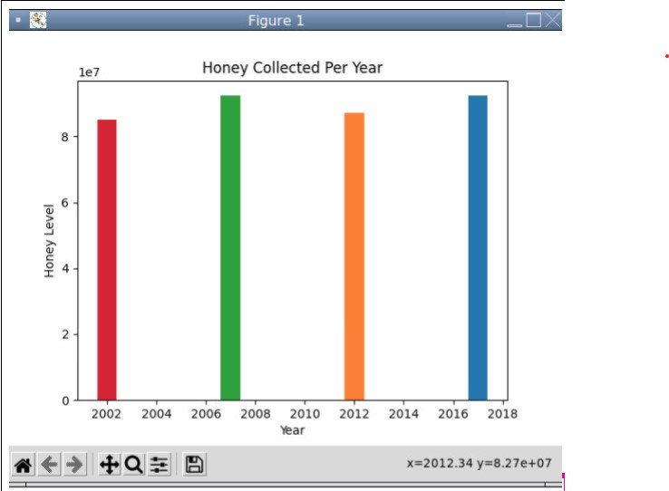

Home
Portfolio
About Me
This is my Portfolio Page!
1.1.9 PROJECT: Flying Birds

For this project we used turtle methods to draw out a nature background with trees, a sun, clouds, grass,
a turtle moving across the grass, and birds flying across the top of the sky.
1.2.5 PROJECT: Crossy Road

For this project we made a crossy road game where there is a turtle moving sacross the screen and the user
is able to input using the up, down, left, and right keys to get across the screen without
getiing hit by the moving car that is going across as well.
Scratch: PROJECT
For this project we made a ping pong game where 2 players could go against each other, a starfish and crab, and
they will score points when the soccer ball goes past the designated goal that each player has. We used procedures, sound, change
of background, scores, inputs, and events to code our game as well.
3.1.6: LAB

In this lab we had to graph the data that was given to describe a specific biome that they were creating. We then had to graph
out the other 4 biomes that were given, and absed off of that data we had to guess which one was the clostes match to the
original data that was given. The one that ended up being the closest was the Inland Forest.
3.2.4: HONEY PROJECT

In this lab we used honey data to see if the health of the bee, or the state in which the bee was, affected how much honey
they were able to produce and how the quality of it was affected as well. So we had to gather data and put it into line and bar graphs
in order to see the changes and patterns of how the health of the bee was affecting the honey.
4.1.4 PROJECT: Rabbits Grass and Weeds

For this project we chose a stimulation that showed the population growth of the rabbits due to the fact that the grass population
was going up and the weeds were also affecting it as well. All of the populations are affected due to the randomness of the
location of the rabbits, grass, and weeds and shows the way the ecosystem can effect each different population.